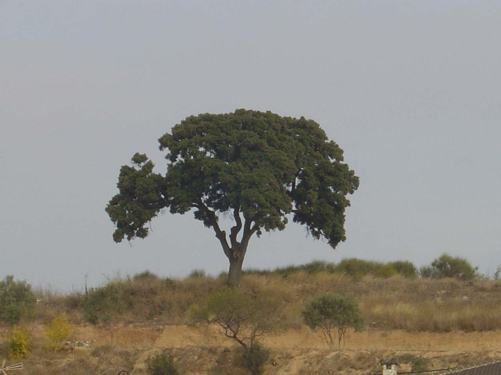
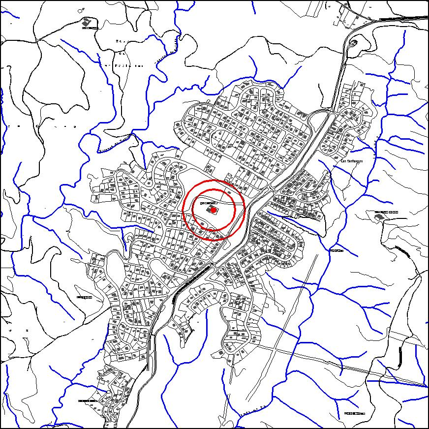

|  |  |
Nom de l’element: Alzina de Can Santeugini
Clau d’identificació: C.07
Nucli o indret: Masia de Can Santeugini.
UTM: X= 412.853, Y= 4.593.921
Règim del sòl: sòl urbà
1.1 Característiques:
Alzina de diversos centenars d’anys (Quercus ilex sp. ilex) situada a la masia de Can Santeugini. Assoleix una alçada molt important i compta amb una estètica molt preuada, amb la capçada en forma regular en forma de paraigua.
1.2. Estat de conservació:
Molt bo.
1.3. Ús actual:
Ecològic i paisatgístic.
1.4. Accés:
Accés fàcil a través del barri de Can Santeugini (c/ Pirineu).
Arbre monumental d’especial interès paisatgístic i emblemàtic de la masia de Can Santeugini
3.1. Usos admesos:
Espais lliures
3.2. Condicions d’ordenació:
Segons Pla Especial a redactar.
3.3. Accés i serveis:
Accés a través del barri de Can Santeugini (c/ Pirineu).
BPU (Bé Protegit Urbanísticament)